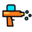

Duel
A water-pistol showdown for chat. When someone types !duel name, a little pixel-art Old
West town grows in along the bottom of your stream against a sunset. The two of them walk out of the
saloon's swinging doors, stand back to back, take five paces, turn and draw. The winner soaks the
loser, whose pistol only dribbles, and knocks their hat clean off. Nobody gets hurt. Then the whole
town shrinks away, the sun sets, and there's nothing on screen until the next duel.
The real overlay with pretend chatters challenging each other every few seconds (muted here; in OBS you hear the sound effects). On stream the background is transparent, so only the street shows, and only while a duel is on.
Setup guide
Get it on stream
-
Add a Browser source
In OBS click + under Sources → Browser. Paste
https://duel.ixitxachitl.com/as the URL and set it to your full canvas size, usually1920×1080. The background is transparent automatically, and the town pops up in a small box at the bottom centre (or across the whole screen, if you'd rather: see Where it shows). - Connect your chat Right-click the source → Interact, move your mouse over the overlay and click the yellow gear in the bottom-right corner. Type your Twitch and/or Kick channel name, add TikTok or YouTube if you stream there, and press Save & apply.
- Try it Test duel in the settings starts one between you and a pretend cowboy. The boxes next to the gear duel any two names you type, and Stop ends a duel early.
-
Let chat duel
Someone types
!duel name. After the duel there's a cooldown (a minute by default) before the next one.
Chat commands
!duel name: duelsname(@nameworks too). They have to have chatted in the last 10 minutes, so nobody gets dragged into a duel when they're not around.!duelon its own picks someone at random from the people who chatted in the last 10 minutes.- Everyone can start one by default. Who can start one in the settings changes that to mods and VIPs, mods, or just you, and you can let particular people too.
- The cooldown starts when a duel ends. You skip it, and so can mods if you turn that on. While a duel is on, other
!duels are ignored.
Chat sources
Twitch & Kick
Just type the channel name. Chat is read anonymously, so there's no login, bot account or app to set up. Each cowboy's shirt is their chat color, and mods and VIPs are recognised by their badges.
TikTok
TikTok needs a bridge app running on your PC. If you use TikFinity, just type
1 in the TikTok box. Otherwise, paste your bridge's ws://… address.
YouTube
Paste your live stream's video ID or link, plus a YouTube Data API v3 key from the
Google Cloud Console. You can also give a bridge ws://… address instead.
What you'll see
- A low-res pixel-art town against a sunset: a saloon with horses tied up out front, a jail, a bank, a hotel and a general store. Everything is a full 3D voxel model seen flat on, so it looks like 2D pixel art, with just the see-through ground showing some depth. It all twists and grows in, and shrinks back out at the end.
- Two little cowboys or cowgirls in their chat colors. The same chatter always gets the same hat, hair and water pistol. Twitch chatters who have set their pronouns with the Chat Pronouns extension get a cowboy for he/him and a cowgirl for she/her; everyone else gets either.
- Back to back, five paces (counted on screen), a turn, a tumbleweed, then DRAW!
- A clear winner: one full stream of water, a soaked loser with their hat in the dirt and a puddle at their feet, and the winner's name in lights. No blood, nobody hurt.
- Little sound effects (footsteps, a bell, the squirt and the splash), made on the fly. Turn them down or off in the settings.
Build a setup link
Settings in the URL
Every setting can also go in the URL, and it overrides what's saved. That's handy for setting up without the Interact window. (The overlay's own Copy setup link button does the same thing.) Fill in what you need and paste the link into your browser source:
ytkey works as a URL parameter too.)
All settings
| Setting | URL parameter | Default | What it does |
|---|---|---|---|
| Chat | |||
| Twitch channel | channel | — | Read anonymously, no login needed. |
| Kick channel | kick | — | Read anonymously, no login needed. |
| TikTok bridge | tiktok | — | 1 uses TikFinity on this PC, or give a ws://… bridge address. |
| YouTube live | youtube | — | Live video ID or link (needs the API key), or a bridge address. |
| YouTube API key | ytkey | — | A YouTube Data API v3 key from the Google Cloud Console. |
| YouTube check every (s) | ytpoll | 6 | Lower is snappier, but uses the daily API quota faster. |
| Demo chat | demo | off | Pretend chatters duel every few seconds, for trying it out. |
| Duels | |||
| Duel command | cmd | !duel | Followed by a name: !duel somebody. On its own it picks someone who chatted recently. Either way, only people who chatted in the last 10 minutes can be duelled. |
| Cooldown (s) | cooldown | 60 | After a duel, how long until the next one can start. The broadcaster skips it. |
| Mods skip the cooldown | modskip | off | Lets mods start a duel during the cooldown too. |
| Who can start one | who | everyone | everyone, vips mods and VIPs, mods, or owner only you. The broadcaster always can. |
| These people can too | allow | — | Names that can start a duel whatever who says, comma separated. |
| Cowboys or cowgirls by pronouns | pronouns | on | Looks up Twitch chatters' pronouns from the Chat Pronouns extension (pronouns.alejo.io): she/her gets a cowgirl, he/him a cowboy, anyone else either. |
| Look | |||
| Where it shows | layout | box | box: in a small box along the bottom of the screen, in the middle, with everything kept inside it. wide: the whole screen, with the sky and lights going right up to the top. |
| Box width (% of the screen) | boxsize | 40 | How wide the small box is. |
| Pixel size | pixel | 0 | Screen pixels per art pixel: bigger is chunkier and fills more of the screen. 0 picks one to fill the small box, or from the source's height on the whole screen (7 at 1080p). |
| Show the duelers' names | names | on | Their names over their hats, in their chat colors. |
| Winner stays up for (s) | hold | 4 | How long the result stays before everything shrinks away. |
| Sound effects volume | volume | 50 | 0 to 100; 0 is silent. |
| Background (testing) | bg | auto | In a normal browser the overlay shows a dark background so you can see it. bg=none makes it transparent anyway, or give a color like bg=black. In OBS it's always transparent unless you set a color. |
window.duel.start("challenger", "opponent", { winner: 1 })
(leave out winner for a coin flip), and window.duel.stop(). These skip the cooldown and the
10-minute rule.